7. Deployment View
The system runs as five containers on one Hetzner VPS. Only the reverse proxy is reachable from the internet; everything else exists solely on the compose network.

Diagram source: diagrams/deployment.mmd.
7.1 Infrastructure
| Host | Hetzner CX33 — x86_64, 4 vCPU, 8 GB RAM, 75 GB disk, Ubuntu 26.04 LTS, Nuremberg |
| Application | https://maintenance.smartsupply.com.de |
| Identity provider | https://auth.smartsupply.com.de |
| Images | ghcr.io/keglev/maintenance-assistant/{backend,frontend},
built multi-arch (amd64 + arm64) |
| Stack definition | docker/docker-compose.prod.yml,
deployed to /opt/maintenance-assistant/ |
| Host preparation | infra/provision.sh,
idempotent |
The host was planned as a CAX21 (arm64) and is a CX33 (x86_64); the reasoning and date are recorded in DECISIONS.txt. Because CI keeps publishing both architectures, that revision changed a purchase order and nothing else.
7.2 Containers
| Container | Exposed | Purpose |
|---|---|---|
| caddy | 80, 443 | The only internet-facing container. Terminates TLS with certificates it obtains and renews from Let’s Encrypt on its own, and routes by hostname and path. |
| frontend | — | nginx serving the Angular bundle. try_files
keeps client-side routes working on reload. |
| backend | — | Spring Boot. Reached only at /api/* plus the
two OpenAPI paths. |
| keycloak | — | Production mode (start, not
start-dev) against Postgres, behind the proxy. |
| postgres | — | pgvector image, holding both the application schema and Keycloak’s, separated by role. |
Nothing but Caddy publishes a port. The database is not merely firewalled off — it has no host port at all, so there is no path to it from outside the compose network.
7.3 Routing and TLS
Caddy serves two hostnames from one certificate authority account:
maintenance.smartsupply.com.de→/api/*,/swagger-ui*and/v3/api-docs*to backend; everything else to frontend. The API is therefore same-origin with the application, which is why the browser needs no CORS grant and the frontend’sapiBaseUrlis a relative path.auth.smartsupply.com.de→ keycloak.
TLS ends at Caddy; the internal network is plain HTTP.
Keycloak is told the public URL (KC_HOSTNAME) and
to trust the forwarded headers
(KC_PROXY_HEADERS=xforwarded), so the tokens it
issues carry the address the browser actually used. That matters
because the backend validates the iss claim against
the same public URL, even though it could reach Keycloak by
container name.
7.4 Configuration and secrets
Configuration is environment variables from
/opt/maintenance-assistant/.env.prod, which is mode
0600, owned by the unprivileged deploy user, and
never committed — docker/.env.prod.example
documents every variable. Database and Keycloak admin passwords
were generated on the host.
The frontend image contains no hostname. It reads
/config.json at startup, which the deployment
bind-mounts, so the same image tag runs locally and in
production. Image references are per service, so a rollback is a
value change in .env.prod plus
docker compose up -d.
Empty is not unset
Compose substitutes an empty string for
${VAR:-}, and an empty string is a set
value. Spring’s ${VAR:default} only falls back when
the variable is absent entirely. So ${VAR:-} in the
compose file does not “leave the application’s default alone” —
it overrides it with "".
This is why the backend ran with an empty
LLM_BASE_URL and an empty embedding model name
until 2026-08-07: both had correct defaults in
application.yml and both were being overwritten by
placeholders that looked inert. Two rules follow, and the
compose file states them where they apply:
- A variable that has a real default in
application.ymlrepeats that default in the compose file (${LLM_BASE_URL:-https://openai.inference.de-txl.ionos.com/v1}), or is not listed at all. - A variable that is genuinely empty by nature — a secret, or
a placeholder for a feature that does not exist yet — keeps
${VAR:-}and says so in a comment.
The same applies to .env.prod: an override you
no longer want must be deleted, not
blanked.
An
.env.prod edit is inert until the container is
recreated
A container’s environment is fixed when the container
is created. docker compose up -d on an
unchanged image and an unchanged service definition leaves the
existing container running, so a corrected value in
.env.prod is read by nothing. The only reliable way
to apply it is:
docker compose -f docker-compose.prod.yml up -d --force-recreate backendThis is not a theoretical footnote. A backend container once
ran an entire indexing pass into HTTP 401s using a revoked API
token while the correct token was already sitting in
.env.prod, edited minutes earlier. Nothing in
docker compose ps, in the file, or in the logs said
the two disagreed — the logs said “unauthorised”, which reads as
a bad key rather than as a stale one. The check that settles it
in one line:
docker compose exec backend printenv LLM_API_KEY | head -c 12 # what the process actually hasThe same applies to a rotated token, a changed budget, and every other value in that file.
Protocol documents and the volume
protocol.source_file stores a path, never the
document (DOMAIN-MODEL.md keeps BLOBs out of Postgres), so the
protocol-files volume is the documents.
Two things have to line up, and both are now in the compose
file:
| Mount | protocol-files:/var/lib/maintenance/files |
MAINTENANCE_FILES_PATH |
/var/lib/maintenance/files |
Without the variable the application uses its
local-development default, ./data/protocol-files,
which inside the container is
/app/data/protocol-files — the writable layer.
Documents would be written successfully, survive a restart, and
vanish on the next compose up -d, leaving rows
whose source_file points at nothing. Nothing would
report an error at the time.
Volume ownership needs no provisioning step, and here
is why. The backend runs as uid 1001, and a fresh named
volume is normally root-owned — but Docker seeds an
empty volume from the image at the mount path,
ownership included, and backend/Dockerfile creates
/var/lib/maintenance/files owned by
app:app before the volume is ever attached.
Verified rather than assumed:
# fresh volume at the path the image creates
$ docker run --rm -v v1:/var/lib/maintenance/files <image> ls -ldn /var/lib/maintenance/files
drwxr-xr-x 2 1001 1001 … -> writes succeed
# fresh volume at a path the image does not create
$ docker run --rm -v v2:/somewhere/else <image> touch /somewhere/else/probe
drwxr-xr-x 2 0 0 … touch: Permission deniedThat second case is the one to remember, because it is what a
future change would look like: if the mount path moves somewhere
the image does not create, or the
mkdir/chown leaves the Dockerfile, or
the volume is replaced by a host bind mount
(Docker never chowns a host path), the container gets a
root-owned directory and every upload fails. The check and the
fix:
docker compose exec backend ls -ldn /var/lib/maintenance/files # expect 1001 1001
# only if it is not:
docker run --rm -v maintenance-assistant_protocol-files:/d alpine chown -R 1001:1001 /d7.5 Delivery
CI owns the rollout. When backend-ci or
frontend-ci succeeds on main, the
matching deploy workflow builds a multi-arch image, pushes it to
GHCR, then connects to the host as the deploy user
and runs
docker compose pull <service> && docker compose up -d <service>
for that one service. Both workflows also accept a manual
workflow_dispatch, which redeploys whatever tag
.env.prod currently names — the button for a config
change or a stuck container.
The rollout is verified from the runner against the public URL rather than on the host, because a container can be up while DNS, TLS or the proxy in front of it is broken; the job fails if the endpoint does not come back healthy. Both deploy jobs share one concurrency group with cancelling disabled, so two rollouts never race over the same containers and a superseded build never interrupts one in flight.
CI deploys images, never configuration
The pipeline runs
docker compose pull <service> && docker compose up -d <service>
against the compose file that is already on the
host. It never copies one there. So
docker-compose.prod.yml and .env.prod
are the two files in this repository that merging does not
deploy:
| Changed in a merged PR | Reaches the host by |
|---|---|
| Backend or frontend code | CI, automatically |
docker/docker-compose.prod.yml |
a person, by hand |
.env.prod (documented by
.env.prod.example) |
a person, by hand — it is not in the repo at all |
The failure mode is quiet and was met in practice: PR #22 fixed the file-volume wiring, merged, and deployed nothing, because the host kept running the compose file it already had. The stack looked healthy and was running the old definition. Applying such a change:
ssh deploy@<host>
cd /opt/maintenance-assistant
cp docker-compose.prod.yml docker-compose.prod.yml.bak-$(date +%Y%m%d-%H%M%S) # rollback copy first
# copy the new file over (scp from the workstation, or edit in place)
docker compose -f docker-compose.prod.yml up -d --force-recreate backendThe .bak copy is the rule rather than a
suggestion: this file is the only definition of the running
stack, there is no second host to compare against, and
git on the workstation cannot tell you what the
server had a minute ago. Combine this with the recreate rule in
§7.4 — a compose change that alters environment:
needs the recreate for the same reason an .env.prod
change does.
CI authenticates with a dedicated ed25519 key that exists
only for this purpose, held in the DEPLOY_SSH_KEY
repository secret alongside DEPLOY_HOST and
DEPLOY_USER. It is written from the step
environment rather than interpolated into a command line, and
deleted in a step that runs even when the deploy fails.
7.6 Backup and recovery
Two mechanisms, covering different failures: a nightly backup on the host for data loss, and a Hetzner snapshot for the host itself.
7.6.1 Nightly backup
infra/backup.sh,
installed as /usr/local/bin/maintenance-backup by
infra/install-backup.sh
and driven by a systemd timer at 03:15 UTC. It
writes two artefacts to
/opt/maintenance-assistant/backups/, mode 0700:
| Artefact | What it is | Retention |
|---|---|---|
maintenance-db-YYYY-MM-DD.dump |
pg_dump --format=custom --compress=9 of the
application database |
last 14 |
protocol-files-YYYY-MM-DD.tar.gz |
tar czf of the protocol-files
volume |
last 14 |
Both are needed, and neither is sufficient.
The database stores only the path of an uploaded
protocol document (protocol.source_file); the
document itself lives on the volume, because DOMAIN-MODEL.md
keeps BLOBs out of Postgres. A database dump restored on its own
gives you rows whose source_file points at
nothing.
For the synthetic corpus the volume archive is
redundant — those documents are regenerated from
backend/src/main/resources/corpus/protocols.ndjson
by re-running the seed, so the repository is already their
backup. It stops being redundant the moment the upload endpoint
ships (PR 3): a file a Schichtleiter uploads exists nowhere
else, and from that point the volume archive is its only copy.
The archive is in place now rather than later precisely so that
switch-over needs no action.
Design decisions worth stating:
- A systemd timer, not cron.
Persistent=truereruns a night missed to a reboot or a snapshot restore; cron silently skips it. Output goes to the journal under the unit name (journalctl -u maintenance-backup) rather than to a local mailbox nobody reads.systemctl list-timersstates when the next run is due andsystemctl statussays whether the last one failed — cron offers no equivalent of either. - Runs as
deploy, not root. The job needs the Docker socket and read access to.env.prod, and that user has both already; root is required to install the units and for nothing else. To be honest about what this buys: membership of thedockergroup is effectively root on this host, so this is least-privilege as a habit and correct file ownership in practice, not a security boundary. - Custom format rather than plain SQL through
gzip. It is already compressed, and it is the only
format
pg_restorecan list, verify and restore selectively. A gzipped.sqlcan be checked only by restoring it somewhere. - Every artefact is verified before it is
named. The dump is written as
.part, checked withpg_restore --listin a throwaway container, and only then renamed; the archive likewise withtar -tzf. A file that fails its check is deleted and the run exits non-zero. So a file in the backup directory is one that was checked, not merely one that was written — and a broken backup shows up as a failed systemd unit that night instead of on the night it is needed. - Retention is “keep the newest 14”, not “delete anything older than 14 days.” If the timer stops running, the second rule quietly expires the last good copies; the first holds them.
- Keycloak’s database is deliberately not
dumped. The realm is reproducible from the versioned
realm-export.json, and the four demo users are in it. Losing it costs a re-import, not data.
Operating it:
ssh deploy@<host> maintenance-backup # run one now
journalctl -u maintenance-backup -n 50 # what happened
systemctl list-timers maintenance-backup.timer
ls -lh /opt/maintenance-assistant/backups/7.6.2 Hetzner snapshots
The nightly backup protects the data. A snapshot
protects the host — the compose files,
.env.prod, Caddy’s certificate store, the Keycloak
database and the state of the OS itself. It is the difference
between “restore the protocols” and “have the demo working
again”.
When to snapshot:
- Before any risky change — an OS upgrade, a Docker major version, a Postgres image bump, an edit to sshd or the firewall, or anything touching Caddy’s TLS configuration. Rule of thumb: if getting it wrong could stop you logging in or stop the certificate renewing, snapshot first. It takes a minute and costs cents.
- Before a pause (see below).
- After a milestone that would be tedious to
rebuild — a release tag, a realm change made in the admin
console rather than in
realm-export.json.
Cost model, which is the part that catches people out: a stopped Hetzner server still bills in full — stopping it saves nothing. The only way to stop paying for a server is to snapshot it and delete the server; the snapshot itself costs cents per month. Recreating from a snapshot gives a new IP, so the DNS records for both hostnames must be repointed before Caddy can renew a certificate. Per DECISIONS.txt the standing decision is to pay during application phases and snapshot only in a real pause — and never to delete the server while applications are out, because the demo link in them has to keep working.
Restoring is a Hetzner console action: create a server from the snapshot, repoint DNS, and let Caddy re-issue. The application data is then whatever the snapshot contained, which is why the nightly dump exists alongside it — a snapshot from Sunday plus Wednesday’s dump beats either alone.
7.7 Host hardening
infra/provision.sh is the record of what the
host is, and is safe to re-run: unattended security upgrades;
Docker from the official repository; an unprivileged
deploy user that owns the stack; sshd with
PasswordAuthentication no and
PermitRootLogin prohibit-password via a drop-in
that survives package upgrades; fail2ban on the sshd jail.
7.8 Known gaps
- Backups are on the same disk as the data. The nightly dump and archive sit on the host they back up, so they survive a bad migration, a dropped table or a corrupted volume — and not a lost server. A Hetzner snapshot is the only off-host copy, and it is manual. No offsite copy is automated, deliberately: the corpus is synthetic and regenerable, and an offsite target means another credential on the host. It becomes a real gap once uploaded documents exist.
- Restore is manual and unrehearsed as a whole. Each artefact is verified nightly and the dump has been restored into a scratch database to prove it works, but there is no automated restore and no drill of the full path — new server, snapshot, DNS, then dump plus archive. Recovery time is therefore unmeasured rather than merely long.
- No staging environment. A deploy goes
straight to the only host there is, so CI on
mainis the last gate before the demo changes under a visitor. - Single host, no redundancy. Recovery is a
fresh
docker compose up -don a new server. latestis a moving tag. Pinningsha-<commit>in.env.prodis the safer habit once the demo is being shown.